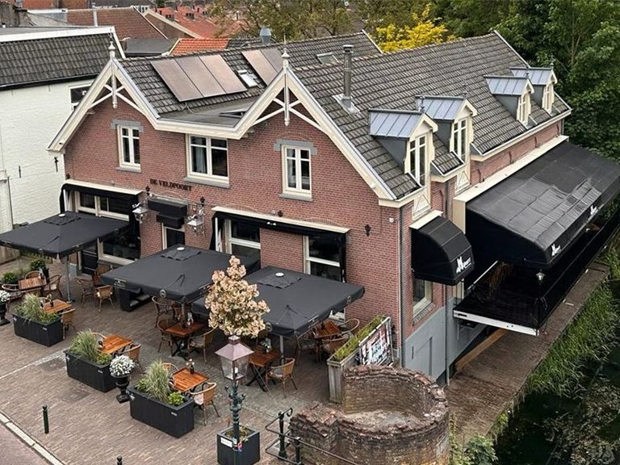
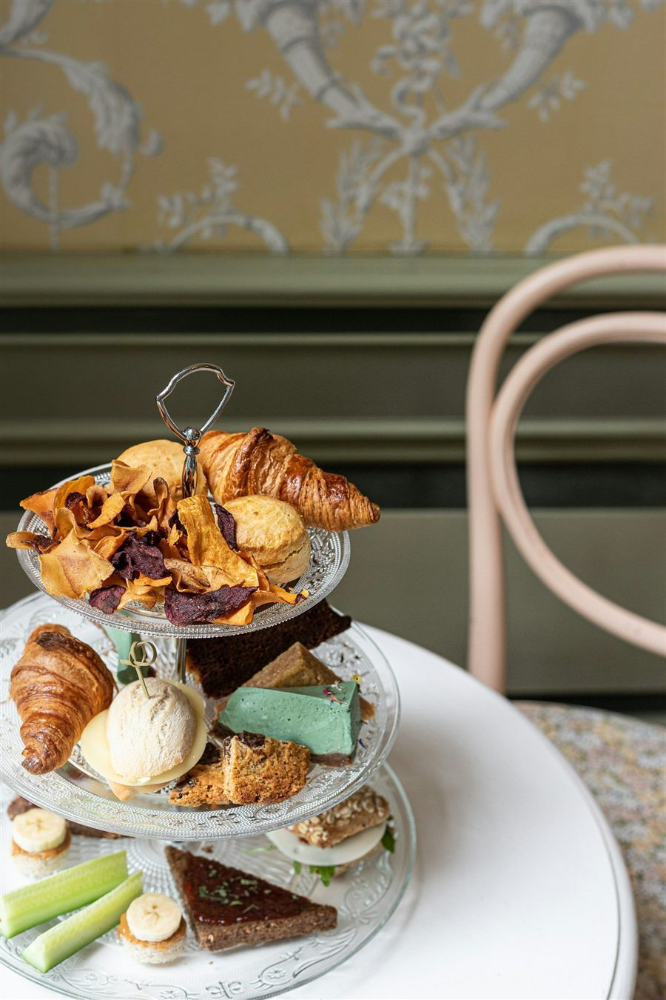

Veldpoortstraat 21, Wijk bij Duurstede
Voor koffie, lunch, diner of bier.
Een café-restaurant in een historisch pand uit 1912, aan de rand van het centrum. Zomers zit u op het terras aan de oude stadsgracht of aan de voorkant van het pand.

Welkom bij De Veldpoort
De Veldpoort eten en drinken is gevestigd in een historisch pand aan de rand van centrum Wijk bij Duurstede. Bij De Veldpoort zit u zomers heerlijk op een schitterend terras aan de oude stadsgracht of aan de voorzijde van het historische pand uit 1912. De Veldpoort is in Wijk al jaren een begrip.
Het café-restaurant is dagelijks geopend, behalve op maandag.
Wij zorgen ervoor dat jij jezelf thuis voelt in De Veldpoort.

Een tafel vol verwennerij
Geniet van een heerlijke high tea met een uitgebreid assortiment zoete en hartige lekkernijen. Inclusief onbeperkt thee (maximaal 2,5 uur) óf 2 koppen koffie naar keuze.
Voorwaarden
- Frisdranken en alcoholische dranken zijn los te bestellen en worden apart berekend.
- De high tea is te reserveren vanaf 2 personen.
- Voor gezelschappen van meer dan 6 personen verzoeken wij u telefonisch contact met ons op te nemen.
- Reserveren kan tot minimaal 24 uur van tevoren.
- De bevestiging van De Veldpoort is altijd leidend.
- Heeft u geen bevestiging ontvangen, twijfels over uw reservering of andere vragen? Neem dan telefonisch contact met ons op.
- Vegetarische wensen graag vooraf doorgeven.
2ruimtes, apart of samen te boeken
Iets te vieren?
Omdat we over twee ruimtes kunnen beschikken, kunnen we één, of beide ruimtes samen, gebruiken voor een besloten gelegenheid: een partij, verjaardag, bedrijfsuitje, besloten diner of een volledig verzorgd feest.
Komt u met meer dan 12 personen? Bel of mail ons, dan denken we graag met u mee.
Openingstijden
| Maandag | gesloten |
|---|---|
| Dinsdag | 11.00 – 22.00 uur |
| Woensdag | 11.00 – 22.00 uur |
| Donderdag | 11.00 – 22.00 uur |
| Vrijdag | 11.00 – 00.00 uur |
| Zaterdag | 11.00 – 00.00 uur |
| Zondag | 11.00 – 22.00 uur |
Route & contact
De VeldpoortVeldpoortstraat 21
Wijk bij Duurstede
0343 574350
info@develdpoort.nl
Bellen kan ook om te reserveren. U vindt De Veldpoort ook op Facebook en Instagram.
Plan uw route